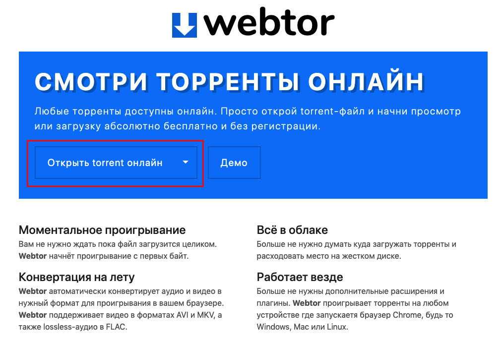

Rutor.org старый отечественный торрент-трекер с внушительной коллекцией торрентов по разным направлениям.
Для того чтобы просмотреть фильм онлайн без необходимости загрузки себе на компьютер необходимо выполнить следующие шаги:
- Перейдите на страницу торрента
- Нажмите на значок загрузки торрент-файла или на ссылку “Скачать…”

- После этого вы должны будете увидеть загруженный файл в своём браузере

- Переходим на сайт webtor.
- Нажимаем на кнопку “Открыть torrent онлайн” и выбираем загруженный файл.
 - После этого вы увидите содержимое торрент-файла.
- Затем выберите файл фильма (у него должно быть расширение .mp4 или .mkv в большинстве случаев) и немного подождите пока не начнётся воспроизведение.

PS: Вы можете пропустить шаги 3-5 если установите специальное расширение для браузера.
PPS: Как видно на шаге 7, webtor поддерживает перекодирование mkv-файлов со встроенными субтитрами. Также вы можете аналогичным образом прослушивать аудио (включая flac) и скачать любой файл.